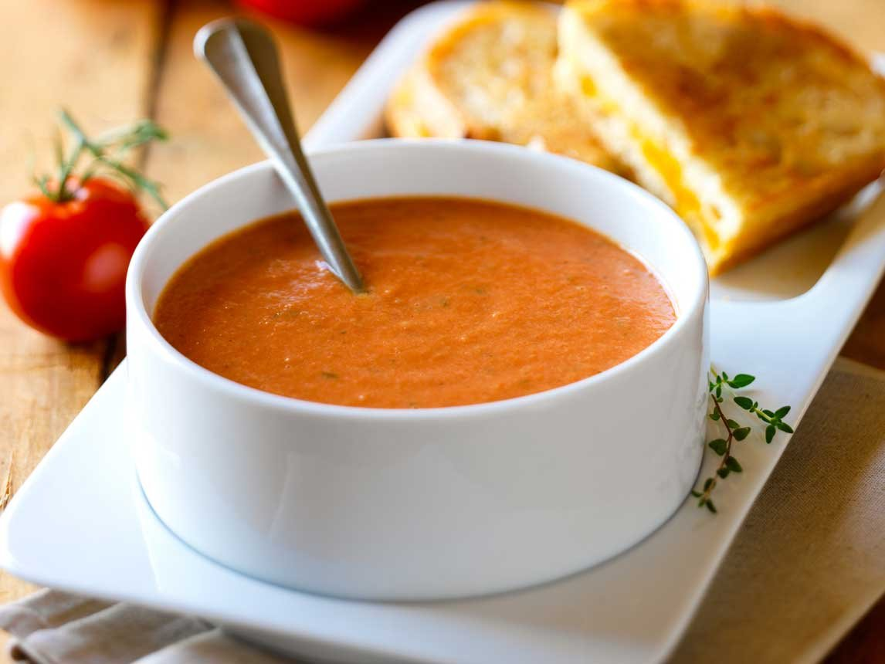

Hoo! Now you can dig into all these wonderful vegetarian recipes, created quite suddenly, on a whim, by me, in my very own kitchen!

How to make this hearty tomato soup?
Ingredients (serves 2)
- Big red tomatoes - (5)
- Onion - (1)
- Garlic pod - (1)
- Dried basil - 1tsp
- Salt - 1tsp or to taste
- Pepper - 1tsp or t taste
- Sugar - 1TBSP or to taste
- Dried Oregano - 1 tsp
- Olive Oil - 2TBSP
Procedure
- Blanch tomatoes. (Blanching:Boil water and pop the tomatoes whole in it. Switch off the fire after a minute, cover and let stand for another minute.Run cold water on the tomatoes, and peel the skin off them easily. Set aside.)
- Pulse the blacnhed tomatoes, garlic and onion in a grinder/processor. Don't add any water.
- Heat 2 TBSP olive oil, add all seasoning in the oil. Sauté for a few seconds until aromatic.
- Add tomato purée, and salt and sugar. Boil to remove all raw smell, usually takes about ten minutes. Keep adding water if the pulp catches at the bottom of the vessel, or gets too thick and starts scalding.
- Serve hot. Garnish with fresh basil leaves and serve with a side of freshly toasted bread sticks or plain bread.
Please do not copy any picture, or recipe or any other information. If you'd like permission to link or reproduce in part or whole any of the images or information here, just ask me at!